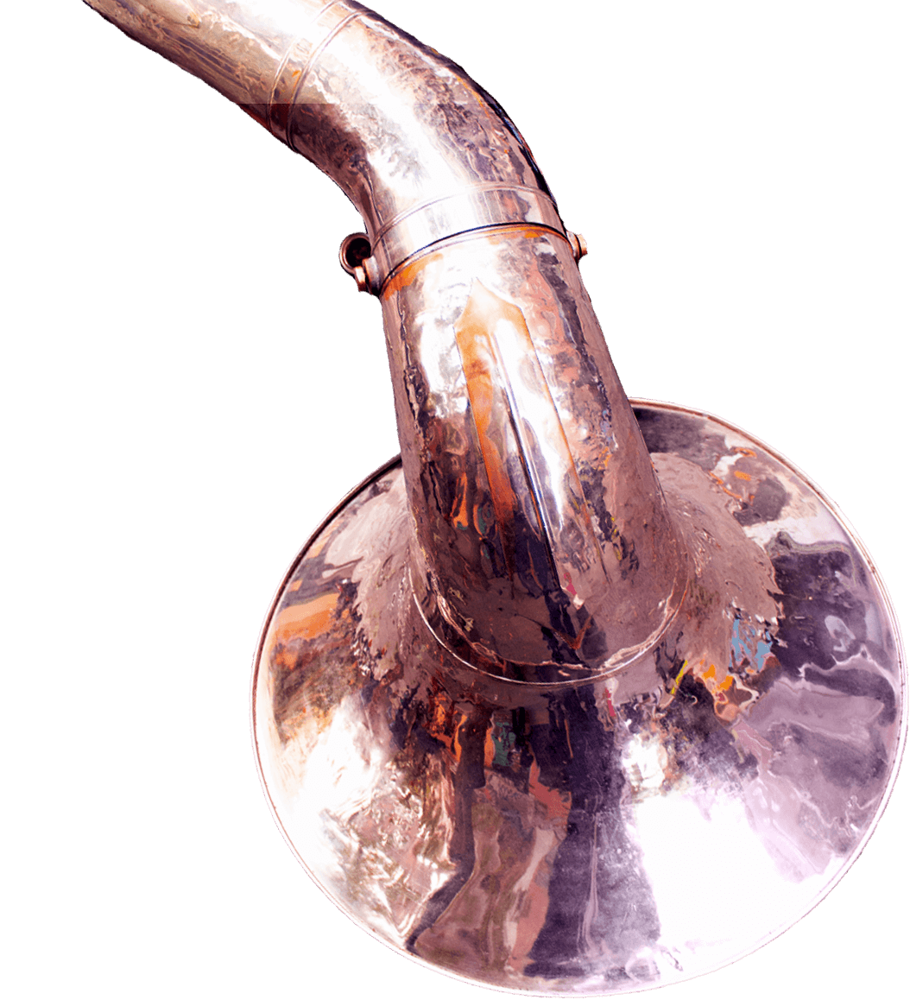
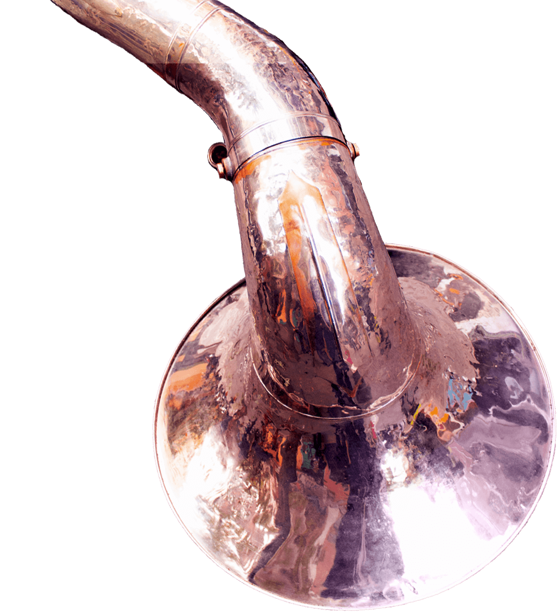

About me
Frontend Developer
5 years of experience, based in Palma de Mallorca, Spain.
I'm a multidisciplinary person, organized, self-taught, versatile, adaptible and detail-oriented.
I have experience working in different places, Brazil, Japan, and Spain, and with different types of companies, startups, and agencies.
Passionate about technology, books, innovatiosn, sci-fi, games, human history, ecology, and gastronomy.
Speaker of 3 languagues: English, Spanish and Portuguese.
I have expertise coding with: HTML/PUG, CSS/SASS, Javascript, Gulp, Git.
But I'm familiar with: Bootstrap, React, MongoDB, GraphQL, and Python.
Professional Experience
Since 2013
Worked at the brazilian startup Mendelics for 2 years, 2013 and 2014, as graphic designer/art director and webdesigner/frontend developer.
In mid 2018 started work in Madrid as front-end developer at Prodigious Spain, with great companies like Mercedes, Garnier and Telefonica( especially with O2).
In April of 2019 moved to Palma de Mallorca where is now based, working as freelancer frontend.
Keywords: Mobile First, Accessibility, Agile/Lean, BEM CSS, ES6, Responsive & Adaptative website, UX, Adobe Suite.
From 2019 started to learn and developing with React.